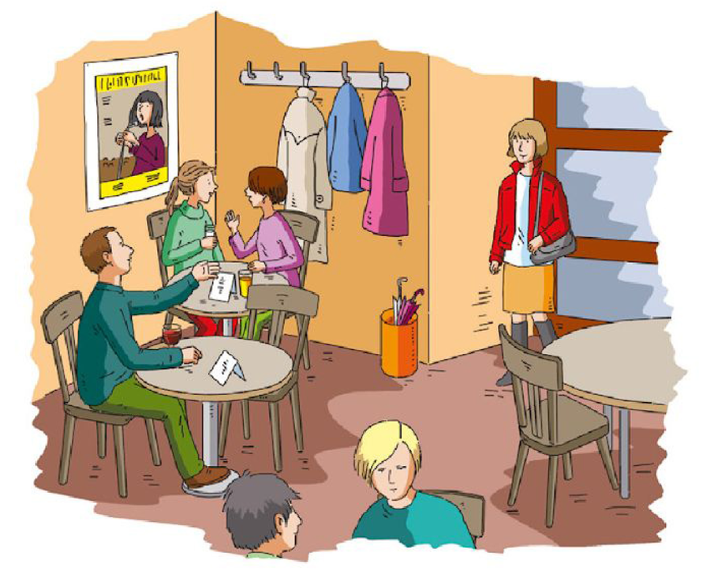
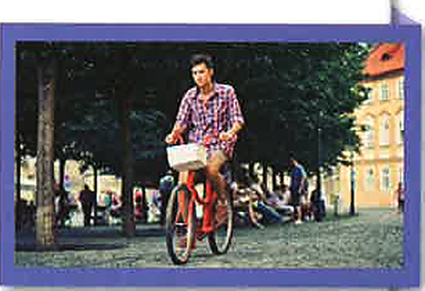

Übung 1: Die erste Verabredung1a) Ascultă dialogul și bifează propozițiile adevărate (sunt mai multe). Prima e deja bifată, ca exemplu. 1b) Ascultă din nou și completează cuvântul care lipsește.

Übung 2: Eine ZeitreiseCitește textul și completează cuvintele de legătură: trage-le din bancă în spații (sau atinge un cuvânt, apoi spațiul). Prima e exemplul.
Übung 3: Anders leben – Was ist richtig?Citește textul și alege la fiecare punct varianta corectă (A, B sau C).

„Wir können heute sofort alles bekommen, wenn wir das Geld dafür haben. Aber die meisten Dinge brauche ich nicht! Früher ist es auch anders gegangen.“ Andreas Prober ist kein Träumer, der in der Vergangenheit lebt. Der 28-jährige Programmierer ist verheiratet und hat ein kleines Kind.
Herr Prober fährt Auto, wenn er ein Auto braucht. Aber er findet, für kurze Strecken, also weniger als zwei Kilometer, ist das nicht nötig. Da geht er zu Fuß: „Früher war eine Viertelstunde oder 20 Minuten Gehen ganz normal.“ Strecken bis 10 km fährt er fast immer mit dem Fahrrad. Sein täglicher Weg zur Arbeit ist auch dabei. „Gehen und Radfahren sind gut für meine Gesundheit. Aber nicht nur das. Ich habe gemerkt, dass wir das Auto eigentlich gar nicht oft brauchen und so ganz schön viel Geld sparen. Ein Kilometer kostet mindestens 35 Cent“, rechnet Herr Prober vor. „Und im Durchschnitt fährt ein Deutscher jedes Jahr 2000 km nur für kurze Strecken unter 2 km. Meine Familie und ich sparen also 700 Euro.“ Das Auto von Familie Prober ist inzwischen zum Nachbarschaftsauto für drei Familien geworden: „Wir machen unser privates Car-Sharing.“
Bei Familie Prober gibt es auch nie Fertiggerichte. „Da sind viele Konservierungsmittel drin, die schuld an Allergien sein können“, sagt Herr Prober. „Selbst gekochtes Essen schmeckt außerdem besser.“ Familie Prober kauft Obst und Gemüse je nach Jahreszeit und Angebot. „Es gibt bei uns von Mitte Juni bis Ende Juli richtig gute Erdbeeren und wir essen dann so viel, wie wir mögen. Und wir machen Marmelade. Aber wir kaufen im Winter keine Erdbeeren, die um die halbe Welt geflogen sind. Das hat es früher nicht gegeben und das muss heute auch nicht sein.“